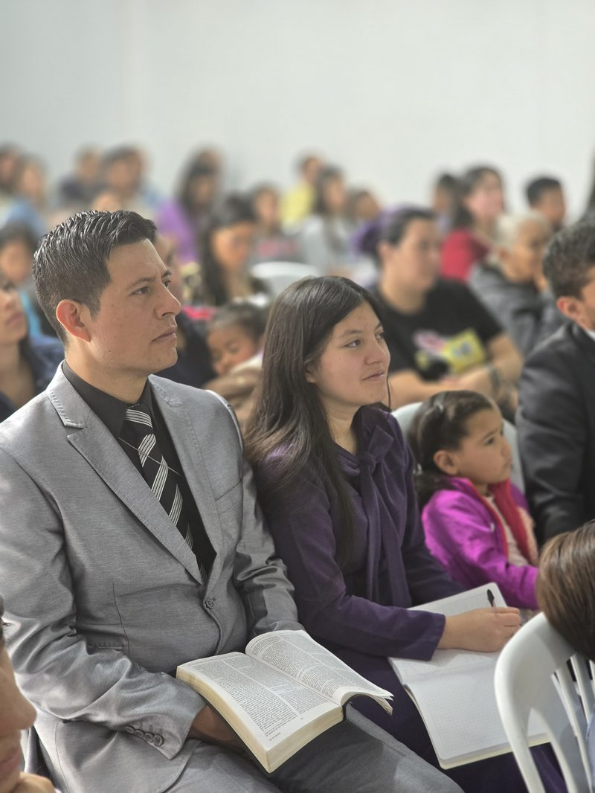
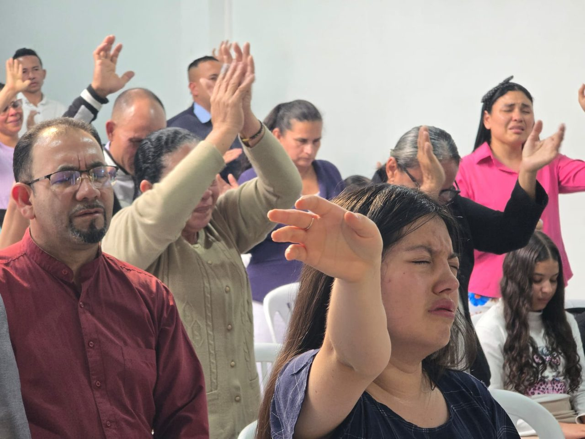
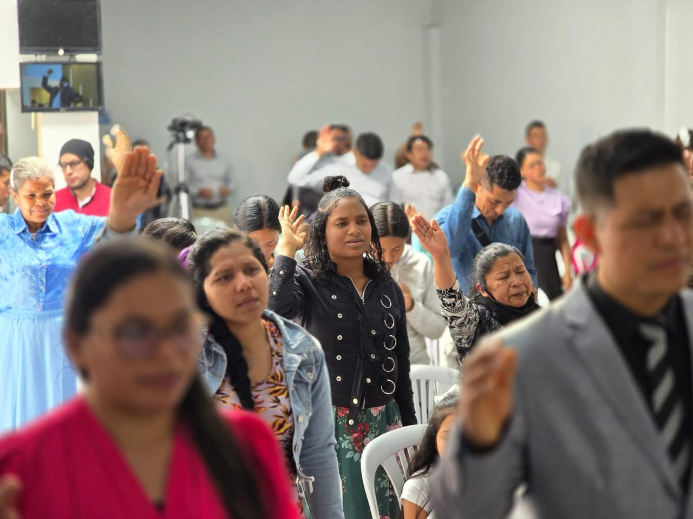
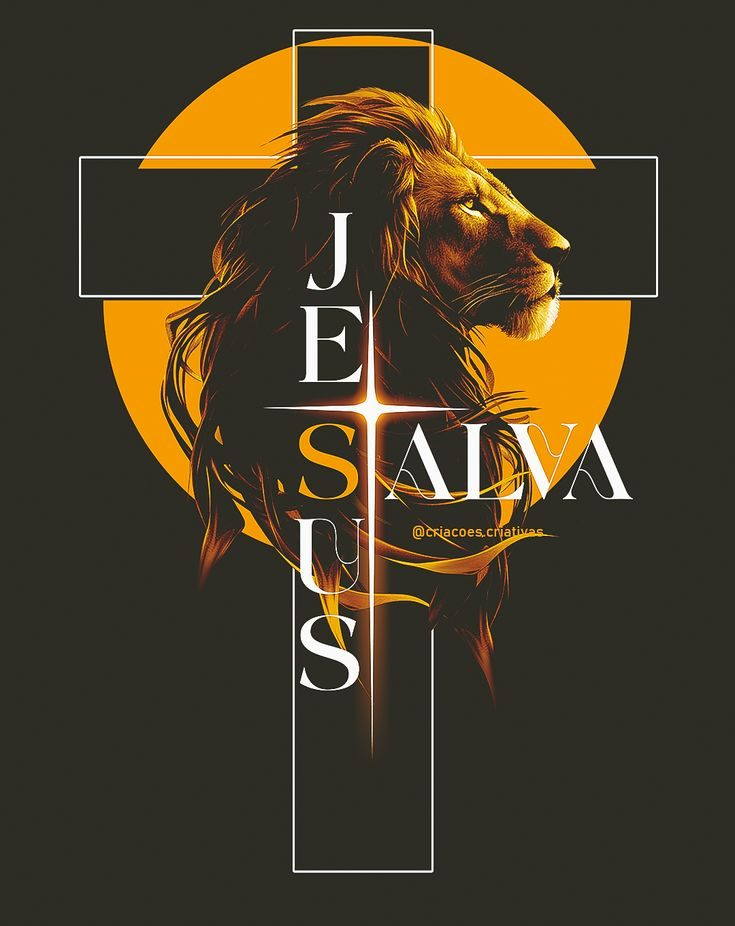

Servicios Semanales
Escuela Dominical
Un espacio dedicado al estudio profundo de las Escrituras para todas las edades, fortaleciendo los fundamentos bíblicos de cada familia.
Horario
Calle [Tu Dirección Aquí]
Suba Rincón, Bogotá
Ministerios y Equipos
Te invitamos a descubrir el propósito que Dios tiene para tu vida dentro de nuestra comunidad. En la Iglesia MMM Suba Rincón, creemos que cada talento es un regalo divino destinado a bendecir a otros. Encuentra tu lugar de servicio y crecimiento en nuestra iglesia, participando activamente en nuestros grupos y ministerios. Aquí no solo desarrollarás tus dones espirituales, sino que también caminarás junto a una familia que te apoya en tu madurez cristiana y fortalecimiento espiritual.
Grupos de Crecimiento
Caballeros
Líderes de fe y familia.

Damas
Mujeres virtuosas en oración.

Jóvenes
Juventud con propósito.
Equipos de Servicio
Evangelismo
Mensaje de salvación.
Ujieres
Servicio con amor.

Alabanza
Adoración en verdad.
Nuestra Misión
Somos la iglesia del Movimiento Misionero Mundial en Suba Rincón, comprometidos con la Gran Comisión. Nuestra misión es predicar el evangelio, discipular a los creyentes y servir a la comunidad con amor y fe.
Familia, Fe y Evangelización son nuestros pilares.
Liderazgo General
Rev. Pastor Principal
Pastor General
"Dirigiendo la visión y el crecimiento espiritual con sabiduría bíblica."

Nombre de la Pastora
Líder de Apoyo
"Enfocada en la administración y el bienestar de los ministerios internos."
Cuerpo de Diáconos
Servicio y Apoyo
"Comprometidos con el servicio constante a la congregación y la obra."
Eventos Realizados
25
Dic
Cena de Navidad Familiar
Celebra el nacimiento de Jesús con toda la familia de la iglesia. 7:00 PM
31
Dic
Culto de Fin de Año y Vigilia
Despide el año en oración y alabanza. 10:00 PM - 12:00 AM
Artículos Destacados
La Fortaleza del Cristiano
Un análisis bíblico sobre cómo edificar una vida espiritual sólida, resistiendo las pruebas y manteniendo la fe inquebrantable.
El Legado de Fe a la Familia
La importancia de modelar un carácter piadoso para que nuestros hijos y jóvenes sigan el camino del Señor con convicción.
El Llamado al Servicio Misionero
Reflexión sobre el mandato de Jesús de servir al prójimo y cómo la iglesia debe ser un faro de evangelización.
Videos y Predicaciones
Video Actual: Predicación: El Poder de la Oración
Lista de Predicaciones
... más videos disponibles al hacer scroll ...
Muro de Bendiciones
Conectando...
"Clama a mí, y yo te responderé" — JEREMÍAS 33:3